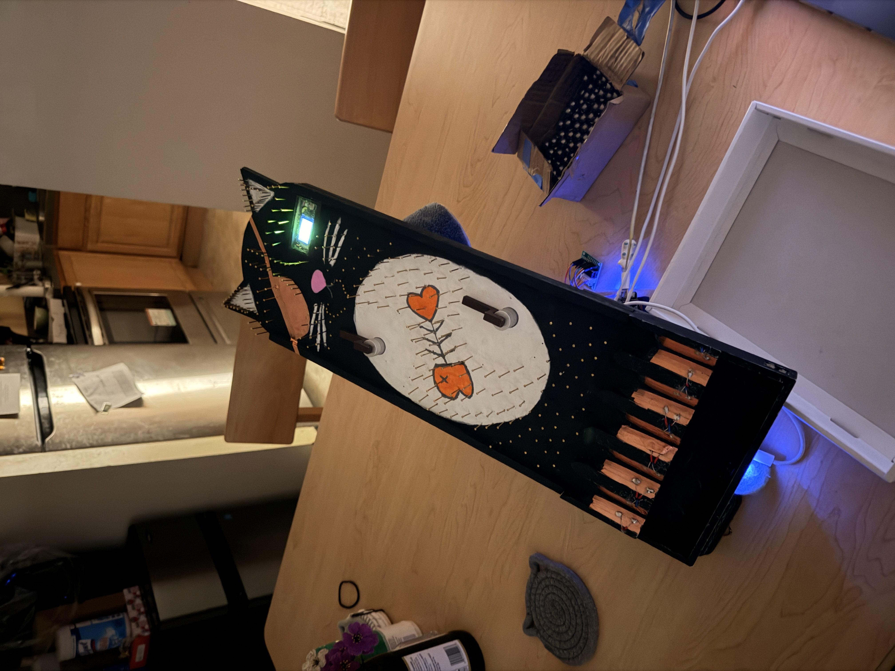
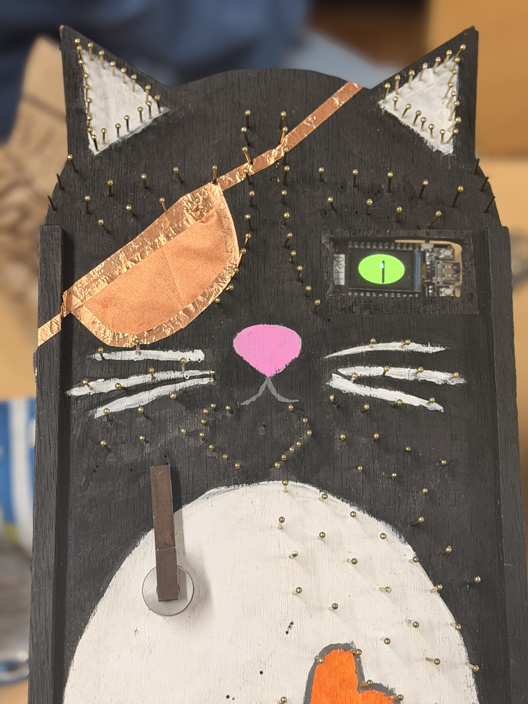
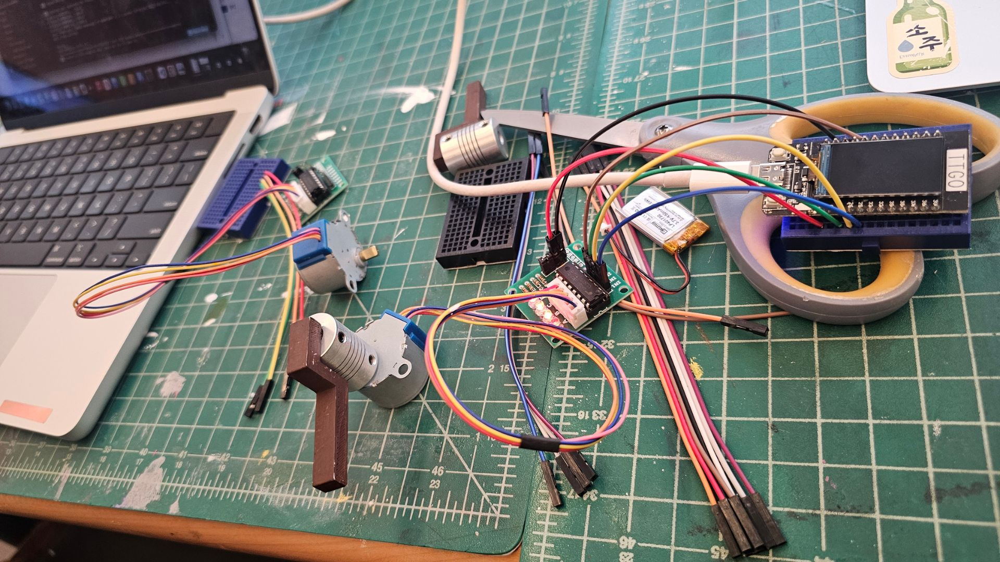
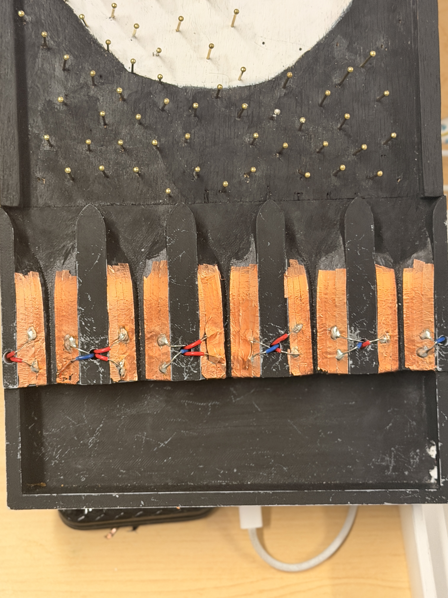
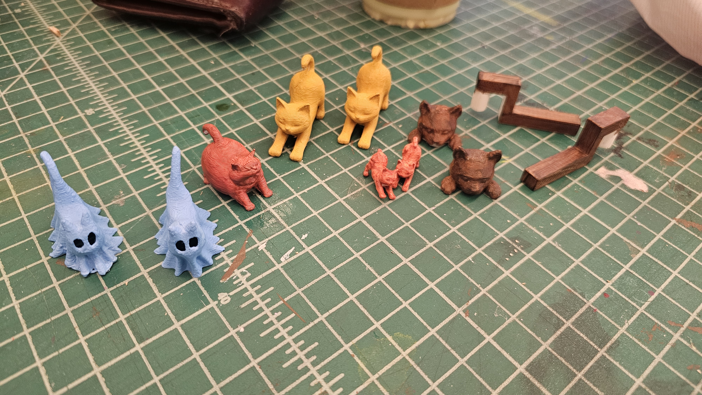
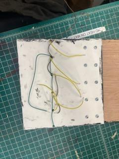
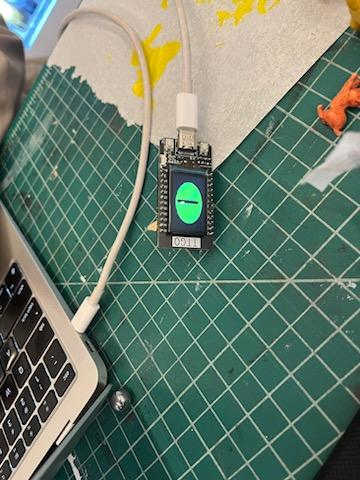
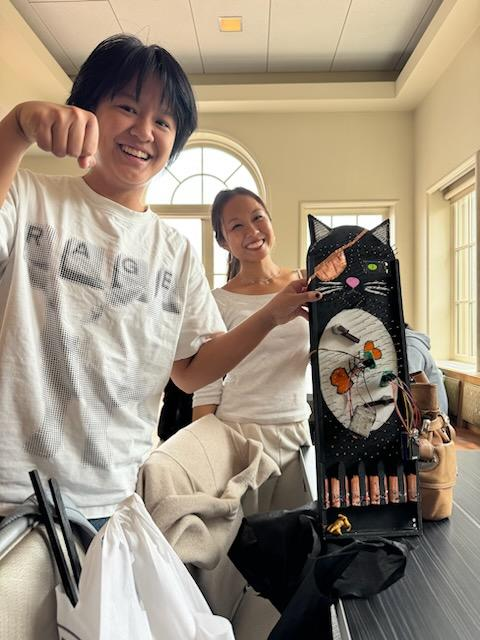

The premise
Most pachinko machines are passive. You drop a ball, gravity and a field of nails decide where it goes, and the resulting distribution is whatever the nail layout produces. The assignment for this module asked us to build something stranger: a pachinko machine that monitors its own output in real time and physically adjusts itself to reshape the distribution as it plays.
We took that brief and ran with it. Our board is a tall black cat, hand-painted, with brass nails as the pachinko field, a 3D-printed ball collector at the bottom split into five channels, and two stepper-driven arms partway down the playfield that swing to deflect balls away from over-represented channels. The whole thing is themed around feeding and poisoning the cat: three of the five slots are food, two are poison, and Meownet's job is to keep herself alive.

System architecture
The project decomposes into three independent ESP32 nodes communicating over ESP-NOW:
- Ball counter. Reads the five channels at the bottom of the board, counts each ball that passes, and broadcasts distribution data.
- Motor controllers. Receive distribution updates and drive two 28BYJ-48 stepper motors with ULN2003 drivers to swing the deflection arms.
- Cat eye display. A LilyGO TTGO T-Display tucked into a cutout in the cat's face, running an animated cat eye independently on battery power.
We chose ESP-NOW over Wi-Fi or Bluetooth because the spec required low-latency wireless communication between the counter and the motor controllers, and ESP-NOW gives us connectionless peer-to-peer messaging with sub-millisecond delivery and no router in the loop. The trade-off is that you have to manage MAC addresses and pairing manually.

Detection: copper tape as a contact switch
Each of the five channels in the 3D-printed collector has two strips of copper tape running across its floor with a small gap between them. When a metal ball rolls through, it bridges the two strips and closes a circuit. One strip is tied to 3.3V through a pull-up resistor; the other goes to a digital input on the ESP32. The ESP32 sees a HIGH → LOW transition the instant a ball lands and rolls across.

Each channel triggers an interrupt on the ball-counter ESP32, which increments a per-channel count and a rolling history. Debouncing is done in software — once a channel triggers, further triggers within ~150 ms are ignored, which prevents a single ball from being double-counted as it bounces across the gap.
When to broadcast: the runtime monitor
The naive thing to do is broadcast a message to the motor ESP32s every time a ball is counted. We did the math on that and it's a bad idea: at five balls per second across five channels, you'd be flooding ESP-NOW with messages that mostly say nothing has changed. The motor nodes would either lag behind or burn cycles processing redundant updates.
The cleaner approach, and what the assignment asked for, is to write a runtime monitoring specification that watches the count variables and only triggers a broadcast at meaningful inflection points — when the distribution actually shifts enough that the motors should reconsider their position. We used RTLola for this.
redistribute event whenever that ratio crosses a threshold. The motor nodes only hear from the counter when they actually need to do something.
The arms: proportional deflection
Each of the two deflection arms is a 3D-printed paddle mounted on a shaft coupler driven by a 28BYJ-48 stepper through a ULN2003 driver. They sit slightly off-center in the cat's belly area, where the ball field starts to funnel toward the channels.

Arm behavior is proportional, not binary. Rather than flipping between "neutral" and "deflect," each arm tilts further as its corresponding poison channel becomes more over-represented. The motor controller receives the distribution snapshot, computes each poison channel's share against the expected 20%, and maps the excess linearly to a step count up to a quarter revolution. If slot 2 has 20% of recent balls, arm A is at rest. If it has 60%, arm A is at about half deflection. If it has 100%, arm A is at full quarter-turn.
Pin budget: the part that nearly killed us
The most surprising lesson of the build was how tight the GPIO budget gets on a single ESP32 once you start counting real-world peripherals. Two ULN2003 drivers want eight outputs. Five sensor channels want five inputs. That's thirteen pins before you account for serial, strapping pins, input-only pins, and the four GPIOs (34, 35, 36, 39) that literally cannot drive outputs on the ESP32 at all.
Splitting the work across multiple ESPs — counter, motors, eye — wasn't just an architectural nicety, it was a hardware necessity. The ESP-NOW link is doing real load-bearing work.

We also lost an afternoon early on to the input-only-pins gotcha. The first stepper test refused to spin no matter what we tried. The motor was fine. The driver was fine. The code was fine. The pins we'd picked were 36, 37, 38, 39 — all input-only on the ESP32. digitalWrite on those pins silently does nothing. There's no error, no warning, no hint. The motor just sits there. If you take one thing away from this post, let it be: read the pin capability table for your specific ESP32 variant before you wire anything.
The cat eye
The face cutout on Meownet hosts a LilyGO TTGO T-Display: a tiny ESP32 dev board with a 1.14" ST7789 color TFT built in. It runs entirely on its own battery and is not part of the ESP-NOW network. Its only job is to look alive.
The eye is a green iris with a vertical slit pupil drawn into an off-screen sprite using TFT_eSPI, then pushed to the display in one frame to avoid flicker. The pupil drifts to a new random position every couple of seconds, and the eye blinks every few seconds with eyelids closing from top and bottom.

Demo
Reflections
A few things we'd do differently with another week:
- Calibrate the arm-to-channel mapping empirically. Right now arm A "covers" slot 2 and arm B "covers" slot 4 by geometric intuition. With more time we'd have run trials with arms in fixed positions and measured how each angle actually shifts the distribution, then fit the control law to the measurements.
- Better debouncing on the contact switches. A few balls bounce hard enough across the copper that they trigger twice. The 150 ms software debounce catches most of it, but not all.
- Tighter integration between the eye and the rest of the system. The eye is decorative right now. With ESP-NOW it could react to events — narrow when the cat is being "poisoned," widen when the distribution is healthy.
The code, RTLola spec, and STL files are all on the team repo: github.com/mimansakant/meownet.
